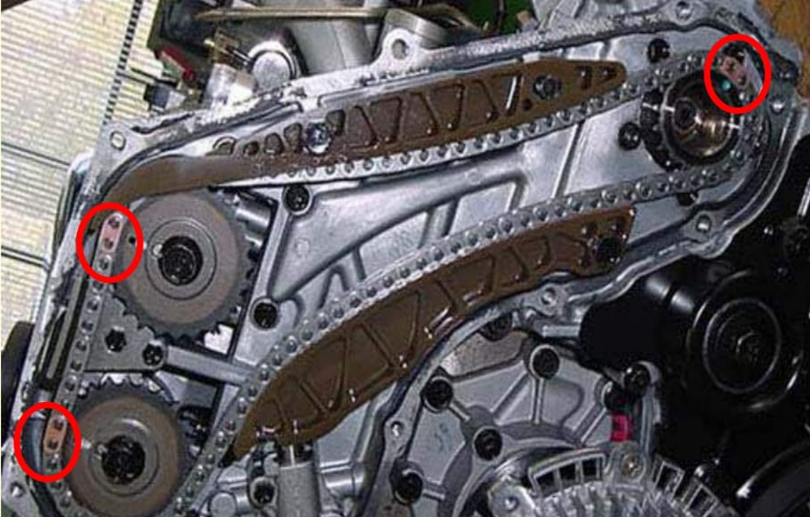
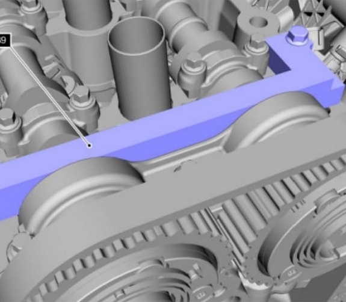
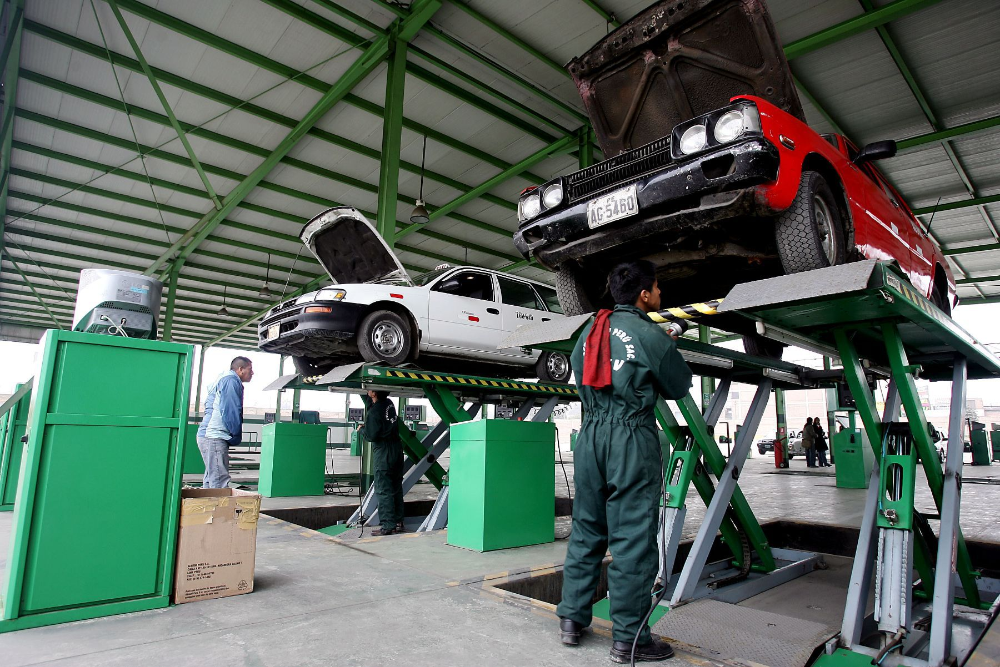

CONSULTAS TECNICAS
Bienvenidos a nuestra red de talleres automotrices, donde ofrecemos una amplia gama de servicios para ayudar a mantener su vehículo en buen estado. Desde consultas sobre datos de motores hasta reparaciones especializadas de sistemas como el sistema de inyección, ABS, airbag y inmovilizadores, estamos aquí para ayudarlo.
Nuestro equipo altamente capacitado se especializa en la reparación y el mantenimiento de todos los aspectos del motor y la transmisión, incluyendo el torque de armado. Utilizamos las herramientas y tecnologías más avanzadas para diagnósticos precisos y soluciones efectivas.
Además, estamos capacitados para lidiar con una amplia variedad de códigos de fallas, incluyendo problemas relacionados con la inyección, ABS, airbag y inmovilizadores. Sabemos lo importante que es mantener el buen funcionamiento de estos sistemas cruciales para su seguridad y la de sus pasajeros.
